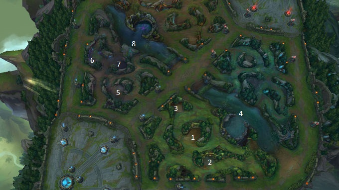

Summoner's Rift
Interface
Summoner's Rift, o maior mapa de League of Legends, é espelhado diagonalmente e dispõe de três rotas que vão em direção à base inimiga. Cada rota é defendida por três torres e um inibidor enquanto o nexus é protegido por um par de torres. Ambos os lados do mapa têm uma selva grande que proporciona efeitos poderosos. O rio central é o lar de dois monstros-chefe e do Aronguejo, que dá benefícios a ambas as equipes.
Modo Clasico(Normal, Ranqueada, Bot, Treino)
Esse modo de jogo é o mais comum e popular para jogadores de League of Legends. Nele temos 3 Rotas: MID, TOP, BOT. Cada rota possui 3 Torres e 1 Inibidor:
T1: Ela é primeira torre da roda, sua armadura é aumenta caso não tenha minions á atacando.
T2: Ela é segunda torre da roda, sua armadura é aumenta um pouco mais que a T2 caso não tenha minions á atacando.
T3: Ela é terceira na roda, muitos a chamam, de torre de inibidor por protege-lo. Por ser a unica que o protege sua armadura é ainda mais aumenta que as outras, e se não estiver sobre ataque ela se regenera.
Inibidor:Os inibidores não causam dano, mas se destruidos os minios inimigos começam a ter os SUPERminios que tem todos os atribudos aumentos considerávelmente. Mas só ficam funeraveis a ataques quando se perde a T3.
Nesse modo de jogo á monstros na selva, que se eliminados, de concedem ouro, burf e experiencia de level. Os burfs estão nos seguindes monstros da selva:
RED (Burf Vermelho): Derrote o Rubrivira para receber um efeito que lhe cura ao longo do tempo e faz com que seus ataques básicos causem lentidão e dano ao longo do tempo aos inimigos. Eles fica no espaço 1 do mapa acima
BLUE (Burf Azul): Derrote o Azuporã para receber um efeito que reduz o Tempo de Recarga e faz com que seu campeão regenere Mana rapidamente. Ele fica no espaço 7 do mapa acima
Dragões Elementares: Os dragões são um dos objetivos mais importantes do Summoners Rift, depois dos 30 minutos de jogo nasce o Dragão Ancião que causa dano Verdadeiro com base no numero de dragões que foram eliminados pela a equipe que o matou. Cada dragão concede um burf diferentes e o LOL os escolhe de forma aleatoria
- Dragão do Fogo: Aumenta do Dano de Ataque e Poder de Habilidade de todo time em 8%/16%/24% baseado no número de marcas.
- Dragão da Agua: Se você não receber dano de campeões recentemente, você regenera 4%/8%/12% da sua vida e mana removida por segundo.
- Dragão da Terra:Você causa 10%/20%/30% a mais de dano como Dano Verdadeiro em monstros Épicos (Dragão, Barão e Arauto) e a Torres).
- Dragão do Vento: Você ganha 15/30/45 de velocidade de movimento fora de combate.
- Dragão do Ancião:Sempre que você causar dano a qualquer coisa exceto torres você vai causar mais 45 + 45 por marca de cada dragão elemental como dano verdadeiro adicional ao longo de 3 segundos. Fogo, terra e vento: Aumenta os efeitos em 50% ( Eu não entendi se ele aumenta para 50% ou em 50%, eu creio que seja em 50% ja que o objetivo e coletar cada vez mais marcas, um exemplo e que se você pegou 2 marcas do dragão da terra você causa 20% do dano, com a marca do dragão ancião você causa 30%). Água: Cura e Regeneração de mana aumentada para 15%